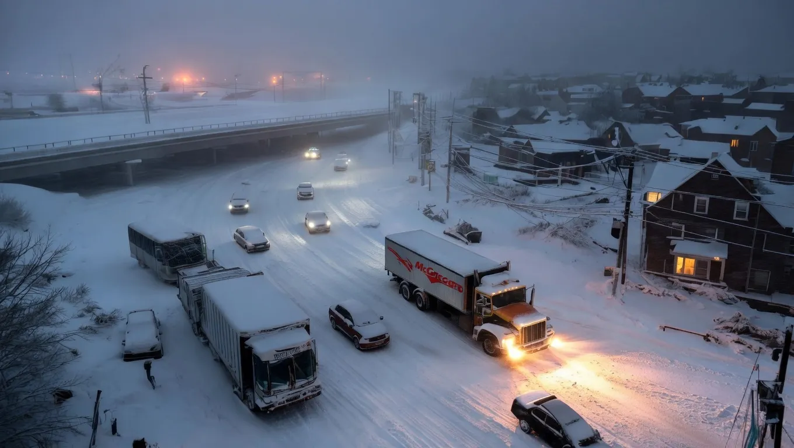

Severe Blizzard Warning: Historic Snowfall Threatens to Cripple Transport and Wipe Out Power Grid


Historic snowfall events can have devastating effects on urban and rural areas, with the potential to cripple transport systems and overwhelm power grids. The weight of heavy snow can snap power lines and tree branches, leaving thousands without electricity. In areas with poorly maintained infrastructure, the risk of power outages and transportation disruptions is even higher.
The impact of severe blizzards is not limited to the immediate effects of the storm. In the days and weeks that follow, communities may struggle to recover from the damage, with potential long-term consequences for local economies and residents. Understanding the risks and consequences of severe blizzard warnings is essential for developing effective emergency response plans and mitigating the effects of these powerful storms.
What the Forecast Shows
Severe blizzard warnings are typically issued when forecast models predict heavy snowfall, high winds, and low visibility. The National Weather Service uses a range of tools, including satellite imagery and radar data, to track the movement and intensity of winter storms. By analyzing these data, forecasters can provide critical warnings and updates to help communities prepare for the storm.
The forecast for a severe blizzard will often include information on the expected snowfall totals, wind speeds, and potential storm surge. This data can be used to predict the likelihood of power outages, transportation disruptions, and other hazards associated with the storm. By staying informed about the latest forecast developments, individuals can take necessary precautions to stay safe and minimize the risks associated with the storm.
Forecast models can also be used to predict the potential impacts of the storm on specific regions and communities. For example, areas with steep terrain or proximity to large bodies of water may be more susceptible to heavy snowfall or storm surge. By understanding these risks, emergency responders and local officials can develop targeted response plans to address the unique needs of each community.
Which Areas Are Affected
Severe blizzard warnings can affect a wide range of areas, from urban centers to rural communities. The impact of the storm will often depend on the specific location, with areas at higher elevations or in proximity to large bodies of water tend to experience more severe weather conditions. Cities with aging infrastructure or limited emergency response resources may be particularly vulnerable to the effects of the storm.
Certain regions, such as the Northeast United States, are more prone to severe blizzards due to their location in the path of frequent winter storms. The combination of cold air from Canada and moisture from the Atlantic Ocean can create powerful nor'easters that bring heavy snowfall and strong winds to the region. Understanding the unique weather patterns and risks associated with each region is essential for developing effective emergency response plans.
In addition to geographic location, other factors such as population density and infrastructure can also influence the impact of a severe blizzard. Areas with high population density, such as major cities, may be more susceptible to disruptions in transportation and power services, while areas with limited infrastructure may struggle to respond to the storm.
Also Read
More Tech stories →Expected Impact on Travel and Power
The impact of a severe blizzard on travel and power services can be significant, with potential disruptions to air travel, road transportation, and electricity services. The weight of heavy snow can snap power lines and tree branches, leaving thousands without electricity, while high winds and low visibility can make travel conditions hazardous.
In areas with limited infrastructure, the risk of power outages and transportation disruptions is even higher. The combination of heavy snowfall and strong winds can overwhelm local power grids, leading to extended outages and disruptions to critical services such as hospitals and emergency responders. Understanding the potential impacts of a severe blizzard on travel and power services is essential for developing effective emergency response plans.
Individuals can take steps to prepare for the potential impacts of a severe blizzard on travel and power services. This can include stocking up on emergency supplies, such as food and water, and having a plan in place for alternative heating and lighting sources. By staying informed about the latest forecast developments and taking necessary precautions, individuals can minimize the risks associated with the storm and stay safe until the weather improves.
How to Stay Safe During the Storm
Staying safe during a severe blizzard requires careful planning and preparation. This can include stocking up on emergency supplies, such as food and water, and having a plan in place for alternative heating and lighting sources. Individuals should also stay informed about the latest forecast developments and follow any instructions from local authorities.
In addition to preparing for the storm, individuals can also take steps to minimize the risks associated with the weather conditions. This can include avoiding travel unless absolutely necessary, staying indoors during the storm, and being aware of potential hazards such as downed power lines and fallen trees. By taking these precautions, individuals can reduce their risk of injury or illness during the storm.
It is also important to be aware of the potential health risks associated with severe blizzards, such as hypothermia and frostbite. Individuals should take steps to stay warm and dry, and seek medical attention immediately if they experience any symptoms of these conditions. By understanding the potential health risks and taking necessary precautions, individuals can stay safe and healthy during the storm.
What to Expect in the Coming Days
In the days and weeks that follow a severe blizzard, communities may struggle to recover from the damage. The potential long-term consequences of the storm can include disruptions to local economies, damage to infrastructure, and impacts on public health. Understanding these potential consequences is essential for developing effective emergency response plans and mitigating the effects of the storm.
Individuals can expect a range of challenges in the coming days, from power outages and transportation disruptions to potential shortages of food and water. By staying informed about the latest developments and following any instructions from local authorities, individuals can minimize the risks associated with the storm and stay safe until the weather improves.
In addition to the immediate challenges, severe blizzards can also have long-term consequences for local ecosystems and wildlife. The weight of heavy snow can damage trees and other vegetation, while the disruption to food chains and habitats can have lasting impacts on local wildlife populations. By understanding these potential consequences, individuals can take steps to mitigate the effects of the storm and promote recovery in the affected areas.
Key Takeaways
- Severe blizzard warnings pose significant threats to transportation and power grids, especially in regions with aging infrastructure and high population density.
- The impact of a severe blizzard can be mitigated by understanding the potential risks and consequences, and taking necessary precautions to stay safe.
- Individuals can take steps to prepare for the potential impacts of a severe blizzard, including stocking up on emergency supplies and having a plan in place for alternative heating and lighting sources.
Frequently Asked Questions
What is a severe blizzard warning?
A severe blizzard warning is issued when forecast models predict heavy snowfall, high winds, and low visibility. The warning is typically issued by the National Weather Service and is intended to alert communities to the potential risks and consequences of the storm.
How can I prepare for a severe blizzard?
Individuals can prepare for a severe blizzard by stocking up on emergency supplies, such as food and water, and having a plan in place for alternative heating and lighting sources. It is also important to stay informed about the latest forecast developments and follow any instructions from local authorities.
What are the potential health risks associated with severe blizzards?
The potential health risks associated with severe blizzards include hypothermia and frostbite. Individuals should take steps to stay warm and dry, and seek medical attention immediately if they experience any symptoms of these conditions.
How long can power outages last during a severe blizzard?
The duration of power outages during a severe blizzard can vary depending on the severity of the storm and the effectiveness of the emergency response. In some cases, power outages can last for several days or even weeks, while in other cases, power may be restored within a few hours.
Conclusion
Severe blizzard warnings pose significant threats to transportation and power grids, especially in regions with aging infrastructure and high population density. The impact of a severe blizzard can be mitigated by understanding the potential risks and consequences, and taking necessary precautions to stay safe. By staying informed about the latest forecast developments and following any instructions from local authorities, individuals can minimize the risks associated with the storm and stay safe until the weather improves.
The potential long-term consequences of a severe blizzard can include disruptions to local economies, damage to infrastructure, and impacts on public health. Understanding these potential consequences is essential for developing effective emergency response plans and mitigating the effects of the storm. By taking steps to prepare for the potential impacts of a severe blizzard, individuals can promote recovery in the affected areas and reduce the risks associated with the storm.
Sarah Mitchell
Senior Tech Editor
Tech journalist with 8+ years of experience covering the latest in smartphones, EVs, AI, and consumer electronics. Bringing you accurate, well-researched stories from the world of technology.
Leave a Comment